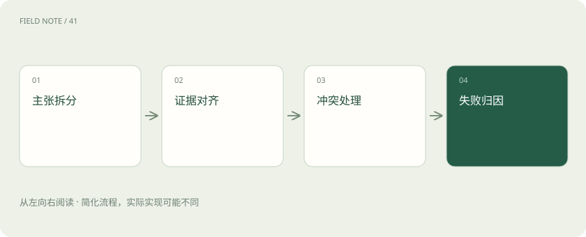

先读哪些知识
先用一个类比理解
类比只帮助建立直觉，不等同于技术的完整机制。
一图看懂

回答先拆为原子主张
“你可以报销 500 元并在月底前提交”包含金额、资格和截止日期等多个主张。应分别检查来源是否支持，不能因为其中金额有引用就认为整句已被证明。原子主张不一定是一个短句，而是可以独立判断真假的事实或规则陈述；建议性表达也应与政策事实明确区分。
证据必须形成支持关系
一段材料与问题主题相近，只说明相关，不说明推出答案。政策写“总部员工限额 500 元”，不能直接推出分支员工也为 500 元。核查时记录主张、证据片段、必要条件和推理步骤；若中间依赖未说明的假设，就应在答案中表明条件或请求补充信息。
引用定位与支持分别验收
第一层检查引用是否存在、能否打开、是否定位到准确页段；第二层检查该页段是否实际支持主张。引用格式、链接有效、来源真实都不能代替第二层。一篇真实制度也可能被引用到错误条款，因此评测需要同时覆盖引用准确率与被证据支持的主张比例。
图解：主张核查
范围比文字相似更关键
有效期、地区、组织、员工类型和例外条件构成主张边界。用户未提供组织时，不能悄悄采用最常见组织的规则。可以先给条件式答案，或询问必要字段。能否直接回答取决于缺失信息是否改变结论：缺失无关字段不必增加交互，缺失关键范围则必须保留不确定性。
冲突按来源与时间裁决
两份材料分别写 400 与 500 元时，先看是否适用于不同地区或时期，再看正式制度与解读稿的权威关系。若已存在明文修订关系，可以说明新规替代旧规；若同一范围同一时间的正式文件仍冲突，系统应展示冲突并升级确认，而不是取平均值或选择排名更高的金额。
拒答也应有细分理由
无可访问材料、材料已过期、必要字段缺失、来源相互冲突和材料不足以推出结论，是不同拒答原因。对应的下一步分别可能是申请权限、更新资料、补充地区、联系制度负责人或进行额外检索。笼统“知识库没有”会掩盖授权问题，也不利于运营修复。
建立互斥优先归因顺序
建议先检查权限越界，再检查语料缺失或解析错误，再检查检索漏召回，再检查组装遗漏，最后检查生成推理与引用绑定。可以同时保留多个标签，但指定最早导致任务无法成功的环节为主因。这样避免同一个源头缺失被重复统计成检索失败、幻觉和引用失败三次。
图解：冲突消解
细分生成阶段错误
材料齐全时仍可能出现范围扩张、数值抄错、否定反转、例外遗漏、过期规则采用、无依据补充、冲突掩盖以及引用错配。分类必须有判定例子，例如“500 元”抄为“5000 元”属于数值错误；正确数字用于错误组织属于范围错误。清晰标签能指导修复，模糊的“幻觉”不能。
评测同时量覆盖与克制
只统计已回答问题的正确率，会鼓励系统拒绝困难问题；只统计回答率，又会鼓励瞎猜。应联合报告可回答集上的任务成功率、不可回答集上的适当拒答率、主张支持率和关键证据覆盖。对高影响规则错误单独计数，避免大量简单问答把关键失败稀释成一个漂亮平均数。
把证据链留给诊断
每次请求保存适当脱敏后的检索条件、候选标识、最终上下文版本、答案主张和引用关系。日志保存需要遵守权限与保留期限，不必复制所有敏感原文。能复现当时快照，才能判断后来看到的文件修改是否解释旧答案；用今天的知识库评价昨天的回答会产生错误归因。
把遗漏也纳入证据责任
答案没有说错，并不代表足以帮助用户行动。材料写“上限 400 元，超过需事前审批”，只回答上限会遗漏实际操作限制。应为每题标注必要信息集合，并区分关键遗漏和可省略背景，防止评测鼓励过短回答。
反过来，要求涵盖全部文件也不可取，冗余会增加主张数量和误用机会。更好的原则是围绕用户决策给足必要条件：当前能确定什么、还缺什么、下一步做什么。答案长度由决策需要决定，引用则让读者能追溯关键结论，而不是把所有检索结果粘贴一遍。 每个必要条件都要能够对应原文中的具体依据。
放在一起对比
| 故障 | 判定依据 | 修复方向 |
|---|---|---|
| 语料缺失 | 源库无必要条款 | 补充治理 |
| 检索漏召回 | 源库有而候选无 | 检索策略 |
| 引用错配 | 材料有但指错 | 主张绑定 |
放进真实场景
用户问分支试用员工上限。材料只有总部标准，系统可说“当前可用材料仅说明总部标准，无法据此确认你的适用金额”，并请求组织或相应制度。把总部数字加上“仅供参考”仍可能误导，不能用免责声明补足不存在的证据。
别踩这个误区
想一想
两个来源冲突时为什么不让模型投票？
来源不是独立同权样本，可能互相转载且适用范围不同；应先处理权威、时间与范围，再决定是否能得出结论。
关联阅读
资料与边界
本文为原创知识讲解。类比和图示经过简化；示例数字不代表实测或报价。整理日期：2026-11-04。文末列出对应技术的原始资料，具体功能与版本支持请以原文为准。